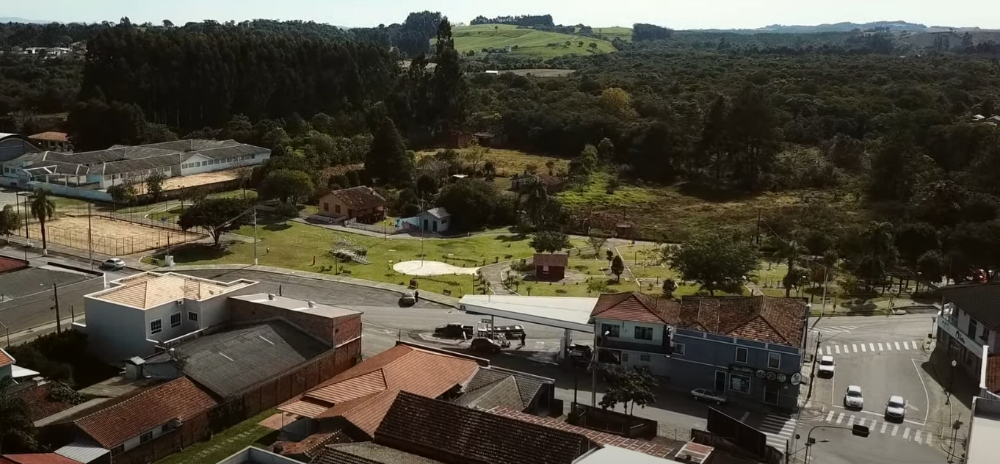

A HISTÓRIA DE REBOUÇAS
As primeiras incursões para as terras do atual município ocorreram com as bandeiras paulistas ainda no século 17, a procura de farto ouro no Morro Biturona, que as lendas da época reportavam com vigor.
A população que lhe deu origem ocorreu numa outra localidade, que se chamava Buritizal.
Somente por volta do ano de 1902 essa comunidade foi transferida para a sede atual do município, mesmo assim com o nome de Rio Azul, que não deve ser confundido com o município de mesmo nome que fica na vizinhança.
O nome atual se deve ao engenheiro Antonio Rebouças, que foi o responsável pela orientação técnica da Estrada de Ferro São Paulo/Rio Grande do Sul.
A atual Escola Erasmo Piloto em conjunto com a praça dos ferroviarios e a casa que lá está, que podem ser vistas na imagem abaixo, foram construidas onde antes havia a estação ferroviaria da cidade
Como cidade devidamente emancipada Rebouças existe desde o dia 31 de março de 1930, conservando o nome de “Antonio Rebouças” até o ano de 1943, quando foi simplificado para apenas “Rebouças”.
O grupo Rebouças antiga foi feita na rede social Facebook, para os interessados em ver um pouco mais sobre a cidade e seus habitantes do passao
GEOGRAFIA DA CIDADE
O centro comercial de Rebouças é bem diversificado e distribuído praticamente nas duas principais ruas da cidade a Honorato Pinto Ferreira e a José Afonso Vieira Lopes, também podemos encontrar nestas ruas a igreja matriz da cidade e prédios importantes como a prefeitura e a câmara dos vereadores
Veja a seguir um vídeo que mostra diversas partes da ciade